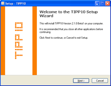
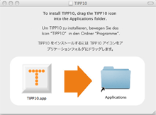

TIPP10 Features | Table of Contents | Ergonomics in the Workspace
TIPP10 Features | Table of Contents | Ergonomics in the Workspace 
3. Installation
TIPP10 can be downloaded for free. Enter http://www.tipp10.com into your browser, go to Download, select your operating system and save the file on your computer.
3.1 Update
If you already own TIPP10 you can upgrade to the most current release without losing your stored data. Simply install TIPP10 over your existing version without uninstalling it. Your data remains intact and your database will be updated the first time you run the program.
In the portable Windows version you must be sure not to delete the portable folder in the TIPP10 directory. You can do this by copying the portable folder from your old version into the directory of the new one.
3.2 Installation in Windows
There are two versions of TIPP10 for Windows. The installable version has a setup routine, can be accessed via the start menu and creates a database for each windows user. It can also be used in a network. The portable version, however, can conveniently be run from a USB stick. It doesn't require installation but is limited to one user as the data is stored directly in the program directory.
3.2.1 Installable Version
To install TIPP10 in Windows double click the file icon to execute the tipp10_win_2-1-0.exe file. This will launch the installation program.
You can first select the installation language. This does not affect the language the actual program will run in. Confirm your selection by clicking on the OK button.

After clicking Next you will be asked to accept the license agreement. Please read the agreement carefully. Only after you have accepted the terms will you be able to install the program by clicking on Next.
You will be asked to provide a directory where TIPP10 is to be installed. Usually you won't have to make any changes but you can enter your own directory or select it by clicking Browse.
After clicking Next you will be prompted to enter a folder name for the Windows start menu. You can select your own name if you wish. To continue installation click Next.
In the last step before the actual program is installed you will be asked if you would like to create a shortcut on your desktop. If you want to do this simply check the desktop symbol with a mouse click otherwise the program will only be accessible through the Windows start menu. Now confirm your selection again by clicking Next.
Now a summary of your settings will be displayed and you can begin copying the files with one click on the Install button. The files will now be extracted and installed.
You will be notified of a successful installation and prompted to launch the program. If you do not wish to run the program now, simply remove the check from Run TIPP10. Now finish the installation by clicking Finish. The program has now been successfully installed.
3.2.2 Portable Version
The portable version of TIPP10 is in a ZIP archive that must be extracted. Usually you simply have to click the tipp10_win_portable_2-1-0.zip file to execute it and then follow the directions Windows provides. If you don't have a program for extracting ZIP files you will need to install one. We recommend WinZip or WinRAR.
After you have extracted the file the tipp10_win_portable_2-1-0 directory will be created. The actual program files are in this folder where your results will also be stored. If you wish you can move this folder to an external drive (e.g., a USB stick) so that you can use TIPP10 from any computer. To start TIPP10 go to the tipp10_win_portable_2-1-0 folder and double click the tipp10.exe file.
TIPP10 will create a new user database tipp10v2.db in the folder when you run the program the first time. This is where your personal results are stored. You can find more information on data storage in chapter 2.3.
3.3 Installation in Mac OS
The Macintosh version of TIPP10 comes in an image file. Double click the tipp10_mac_2-1-0.dmg (you may see a .dmg suffix) file to display the license agreement.
Please read the agreement carefully. The installation window will only appear after you have accepted the terms.

Now simply drag the TIPP10 icon into the Application folder with your mouse. TIPP10 is now installed and will appear in your applications. You may also select and delete the image file as it is no longer needed.
To run TIPP10 open Finder and select Applications in the left menu. Now you can start the program with a double click on the TIPP10 icon on the right side.
For easy access to the program drag the icon to your desktop or dock with your mouse.
3.4 Installation in Linux
There are currently installation instructions for Linux Ubuntu, Kubuntu and OpenSuse. TIPP10 should run smoothly in other Linux systems as well.
3.4.1 (K)Ubuntu Linux
You can install TIPP10 in (K)Ubuntu with a Debian package manager or manually in the conventional way.
You can find a current Wiki for TIPP10 installation in Ubuntu at http://wiki.ubuntuusers.de/Schreibtrainer.
Installation with the package manager
To install the Debian package you must download the tipp10_debian_2-1-0.deb file from the project homepage. To install the package use the appropriate package manager for your Linux distribution. In Ubuntu this is usually gdebi, in Kubuntu the software administration or gdebi-kde. You can find further information for installing Debian packages at http://wiki.ubuntuusers.de/Paketinstallation_DEB.
After installation TIPP10 can be started from the start menu under Applications - Education - TIPP10.
Manual Installation
To install TIPP10 manually you must download the archive file tipp10_linux_v2-1-0.tar.gz from the project homepage. The archive has an executable program file tipp10. Using the following commands you can extract the application folder to /opt/ and create a shortcut in /usr/local/bin/:
sudo tar -xzf tipp10_linux_v2-1-0.tar.gz -C /opt/
sudo ln -s /opt/tipp10/tipp10 /usr/local/bin/
Now you can launch the program in Terminal using the following command:
tipp10
To create a startup make sure you have root privileges and use an editor to create the file /usr/share/applications/tipp10.desktop. Now add the following content:
[Desktop Entry]
Encoding=UTF-8
Name=TIPP10
Comment=Touch Typing Software
Comment[de]=10-Finger-Schreibtrainer
Exec=tipp10
Icon=/opt/tipp10/tipp10.png
Terminal=false
Type=Application
Categories=Education;
After saving the file TIPP10 can be launched from the start menu under Applications - Education - TIPP10.
3.4.2 OpenSuse
The following installation has been tested in OpenSuse 10.1.
1. Download the tipp10_linux_v2-1-0.tar.gz file from the project homepage.
2. Extract the archive. Execute the following commands in Terminal:
tar -xvvzf tipp10_linux_*.tar.gz
rm tipp10_linux_*.tar.gz
ln -s /$HOME/tipp10 /$HOME/Desktop/tipp10
cd $HOME
3. Open the tipp10 folder on the desktop.
4. Execute the tipp10 file to start the program.
5a. Close TIPP10 if TIPP10 produces error number 309 upon launching.
5b. Then execute the following command in Terminal:
chmod u+w $HOME/tipp10/tipp10v2.db
5c. Now restart TIPP10 (by executing the tipp10 file).
 TIPP10 Features | Table of Contents | Ergonomics in the Workspace
TIPP10 Features | Table of Contents | Ergonomics in the Workspace 
© 2006-2011 Tom Thielicke IT Solutions